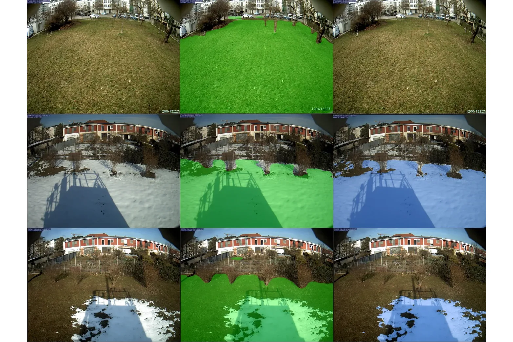
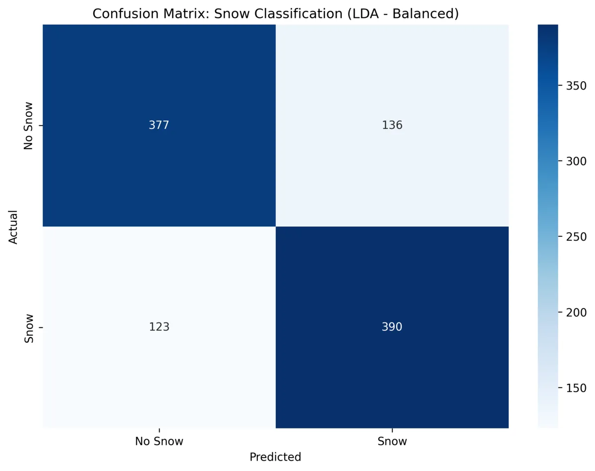
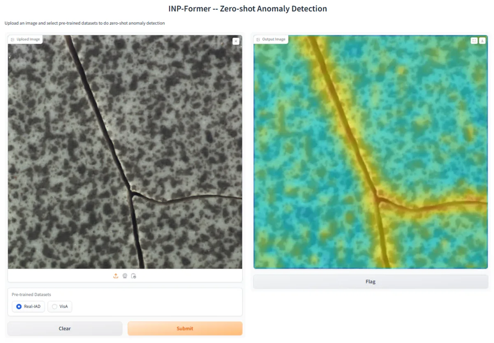
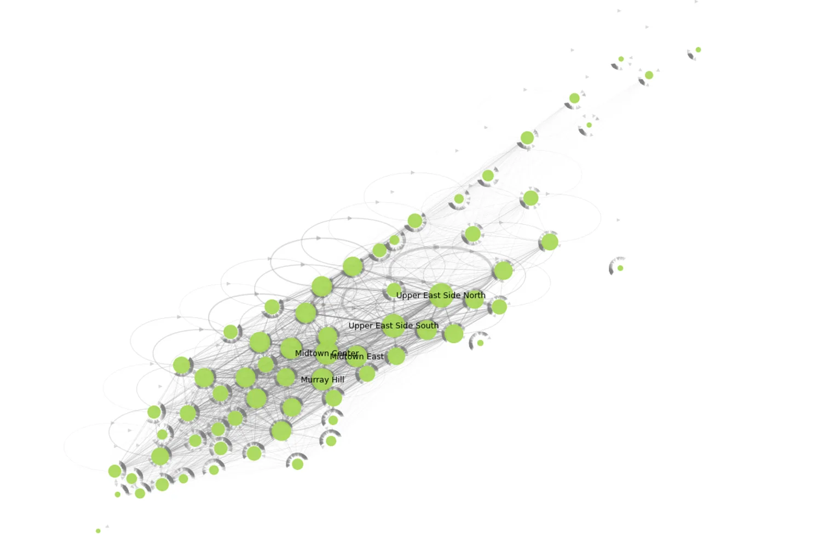

Data scientist and AI engineer by training, generalist by trade: pipelines, computer-vision models, retrieval systems, and the dashboard that puts the result in front of someone.
I work across the chain: data pipelines and warehouses, computer-vision and time-series models, retrieval systems, and the dashboards that put the result in front of someone.
Chemical engineer first, so I ask what the number means before I ask whether the model is clever.
Most of my work ends with a table: configurations, a labelled evaluation set, and a hit rate that
someone else can reproduce.
Snow-cover estimation from 12 camera stations in the Pyrenees:
0.90 mIoU and +0.10 AUROC over the baseline. First-author paper under
review at Computers & Geosciences; best presentation award, Ljubljana.

One of the nine stations the model trained on: the frame, the ground mask (green) and the snow mask (blue) as labelled.Snow fraction per station, and the brightness change snow causes, for three of the stations: one darkens under snow, two brighten.

Snow vs no-snow from handcrafted image statistics alone: LDA on a balanced split, 767 of 1026 frames correct.
A job-market warehouse: 233k postings from 11 applicant-tracking systems,
deduplicated on keys that are not unique, modelled into a star schema with dbt, with SQL marts
and a dashboard generated from the data itself. Tests fail the build when a rule breaks.
The live dashboard — a fixed panel of 1,200 boards, fetched every morning. Screenshot, 15 November 2026.
Retrieval over the same corpus, answering with citations. Every configuration is
benchmarked on 15 labelled questions, and the README reports the ones that lost.
hit@1 over 15 labelled queries
Retriever
hit@1
MRR
BM25
0.850
0.850
Hybrid (RRF)
0.802
0.763
Dense only
0.600
0.567
A question in, ranked postings and a cited answer out.The pipeline in tiers: entry points, serving path, offline build, and the measurement layer beside them.
Reproduction and extension of a CVPR 2025 anomaly-detection method: the experiments of the
original paper re-run, then LoRA fine-tuning, ONNX export and FLOPs profiling on top.

The demo built on the reproduced model: image in, anomaly heatmap out, threshold on a slider.The method being reproduced — INP-Former's pipeline (figure from Luo et al., CVPR 2025).
Transport-mode inference from cellular network data, for the FRI Data Science competition
(Slovenia): features per subscriber-hour, then an HMM over the sequence rather than a label per
point.
Spectral clustering of origin–destination flows over the zone grid: the groups are commuting basins, and they do not follow administrative borders.The denoising step, before and after: raw tower fixes jump between cells, the filtered path is a route a person could have taken.Mode mix recovered from the network data, smoothed with an HMM.
A paper registry of chemical retailers, normalised and joined to notified poisoning cases,
turned into a map by municipality that a small team used to decide where to inspect.
End-to-end analysis of New York City TLC trip records: preparation, scalable processing, and
the results written up — the project where I learned to stop loading everything into memory.
Tip per km² by taxi zone, pandemic period — one of three periods in the same figure. Midtown carries the colour scale; almost everywhere else is flat.

Zones as nodes and trips between them as edges, sized by outgoing PageRank. The shape is Manhattan, recovered from the flows alone.
03 · Experience
2024
Data Analyst — Secretaría de Salud, Gobernación del Meta
Bogotá, Colombia
Digitised and normalised the registry of chemical retailers, joined it to health surveillance
records, and produced the municipality-level picture that replaced equal-share inspection planning.
2024–25
Technical Consultant — Consultors Ambientals de Negocis
Project-based
Feasibility studies for waste-to-energy and biogas projects: mass and energy balances, equipment
sizing, process economics, and vendor documentation checked against specification.
04 · Education
2024–26
MSc Artificial Intelligence
Universitat Pompeu Fabra, Barcelona · University of Ljubljana · 8.54/10
Thesis graded 10/10: snow-cover segmentation from camera imagery for a national meteorological
service.